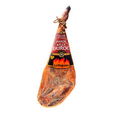
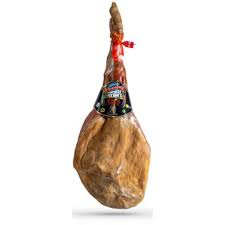
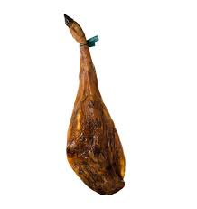
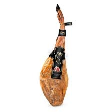

Galería de Imágenes de Jamones
La mejor selección de jamones
Jamón de Bodega
Jamón de Bodega
Jamón Serrano

Jamón Serrano
Jamón de Trevelez

Jamón de Trevelez
Jamón de Cebo de Campo

Jamón de Cebo de Campo
Jamón de Bellota 100%

Jamón de Bellota 100%